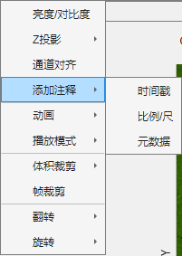
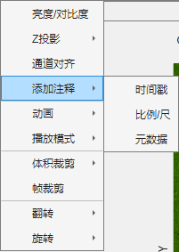

1.2.4 移除背景
 移除背景包括自动设置或手动设置。 自动设置将提取图像边缘部分像素，自动估计相机背景均值，并从原始图像中减去这一固有值。 固定设置允许您输入自定义背景均值，并从原始图像中减去这一固有值。 注：背景估计仅当该值不超过原始图像中最小像素值时，可完全恢复原始图像而不丢失强度信息。

移除背景包括自动设置或手动设置。
自动设置将提取图像边缘部分像素，自动估计相机背景均值，并从原始图像中减去这一固有值。
固定设置允许您输入自定义背景均值，并从原始图像中减去这一固有值。
注：背景估计仅当该值不超过原始图像中最小像素值时，可完全恢复原始图像而不丢失强度信息。